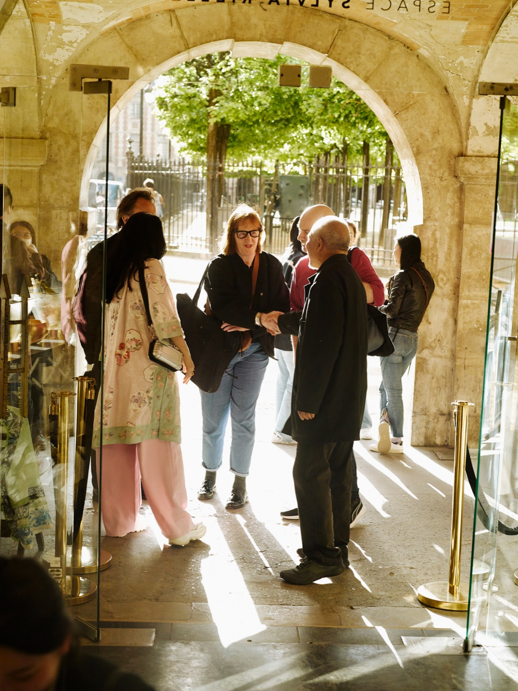
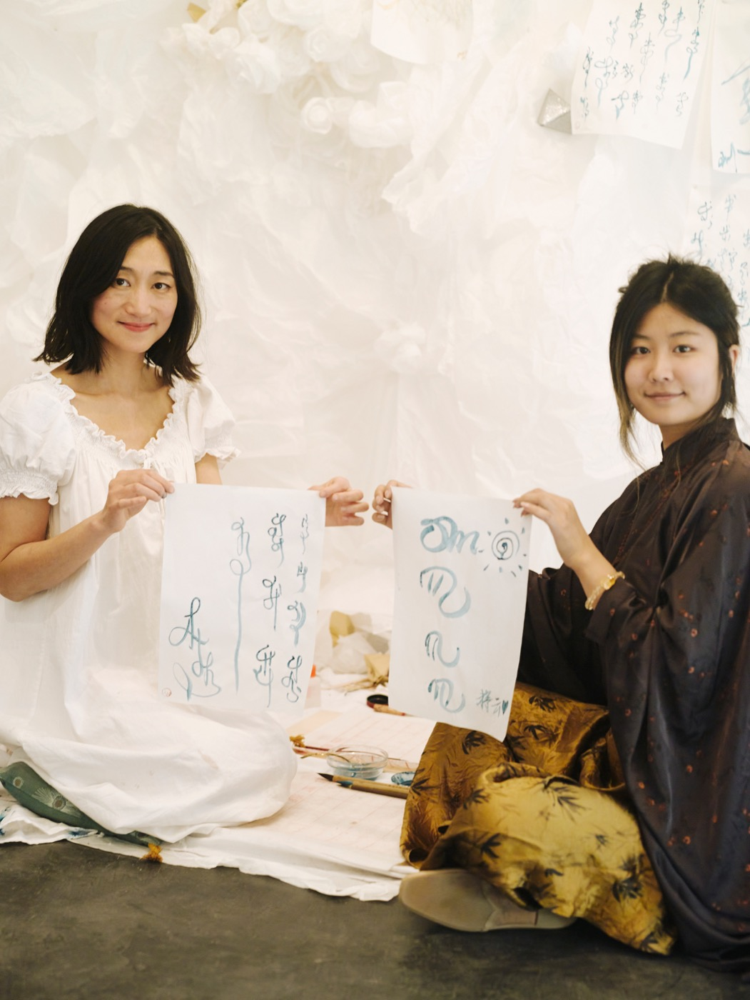
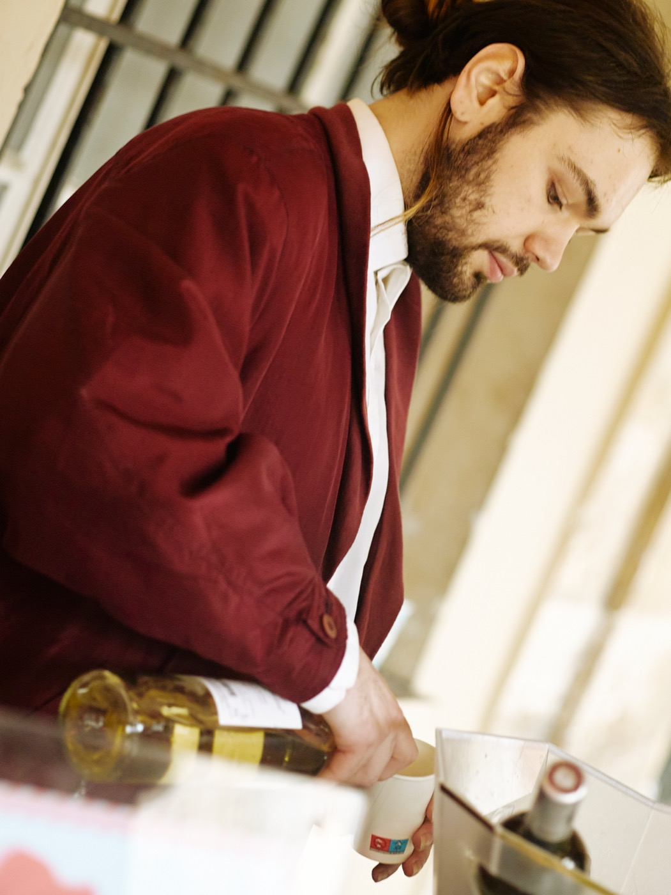
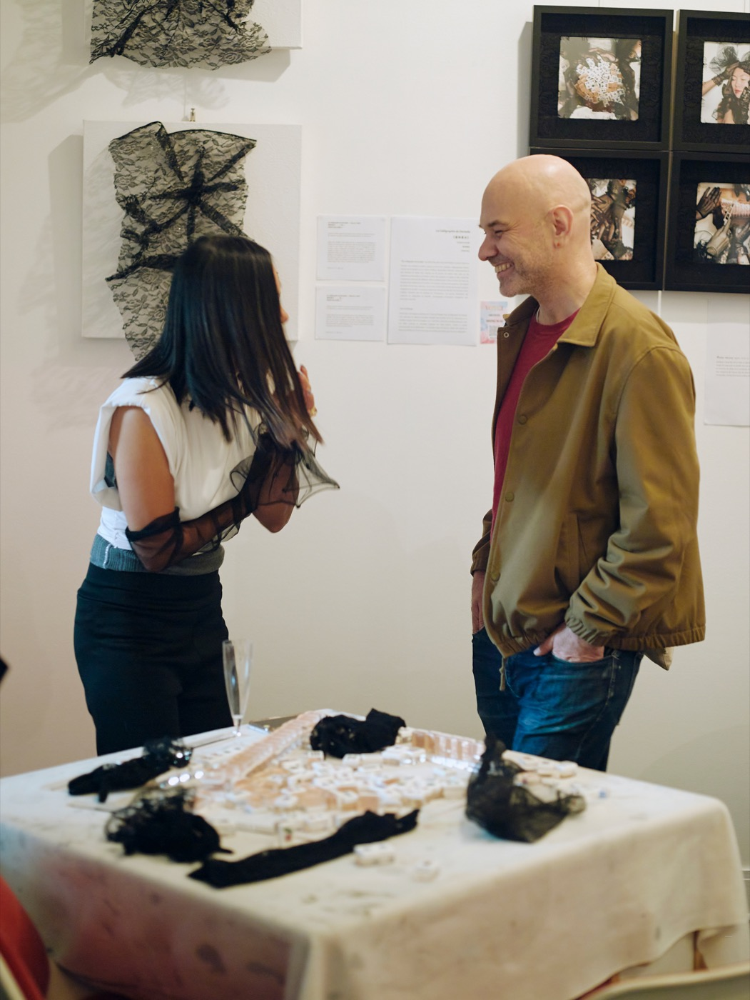
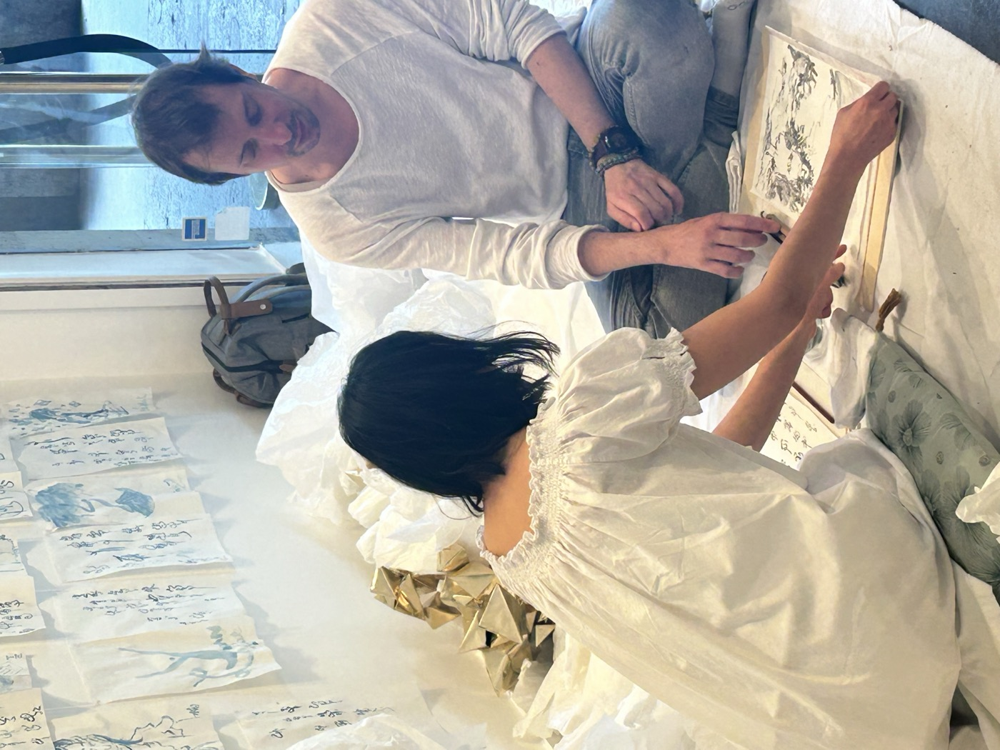

孚日广场，巴黎最古老的皇家广场，在一周之内，成为了一个流动的当代剧场——历史与此刻在同一块石板上共存。
One of Paris's oldest public spaces — built in 1612, symmetrical, composed, historically charged — becomes the site of deliberate interruption.
Place des Vosges exists in a particular temporal tension: it is a monument that people walk through every day without quite seeing it anymore. The Art Week was designed around this invisibility — using performance art to make the familiar suddenly strange again.
The project brought together a curated group of contemporary artists — Chinese, French, and international — whose work shared a quality of presence rather than spectacle. What mattered was not scale or shock, but something more delicate: the moment when a passerby stops, becomes uncertain of what they are seeing, and stays.
这个项目将一批精选的当代艺术家汇聚在一起——中国的、法国的、国际的——他们的作品共享一种"在场"的质地，而非奇观。重要的不是规模或冲击，而是某种更精微的东西：当路人停下脚步，开始对自己所看到的东西感到不确定，然后留下来的那一刻。
The curatorial frame was not an art fair, not a festival, but something more provisional and less defined — a week in which the square's usual choreography of tourists and joggers and café-goers would be gently, persistently disrupted.
Each artist was given a specific time slot and a specific zone within the square. They were asked not to announce themselves, not to distribute leaflets, not to solicit attention. The work had to earn its audience through its own quality.
The programming moved between the intimate and the expansive — a solo performer working with a single object in one corner while a choreographed group moved through the central fountain in another.
每位艺术家被分配了一个特定的时间段和广场内的特定区域。他们被要求不要宣布自己，不要分发传单，不要主动吸引注意力。作品必须通过自身的质量赢得观众。节目在亲密与宽广之间摆动——一位独奏者在一个角落用单一的物体工作，而一组有编排的团体在另一处穿越中央喷泉。
The city as stage — and the audience always already in it.
There were no barriers, no roped-off areas, no designated viewing positions. This was deliberate. The work existed in the same space as the pigeon and the delivery cyclist and the couple arguing by the archway.
Audiences discovered the performances rather than attending them. Some people walked through without noticing. Others stopped for hours. The undecidability between "is this art?" and "is this person having a real experience?" was part of the design.
The production team worked across seven days with rolling schedules, ensuring that no two days had the same rhythm. Morning light, afternoon heat, and evening shadow created different contexts for the same works.
没有围栏，没有用绳子圈起来的区域，没有指定的观看位置。这是刻意的。作品存在于与鸽子、外卖骑手和在拱门旁争吵的情侣相同的空间里。观众发现了这些表演，而不是去参加它们。有些人径直走过，毫无察觉。另一些人停留了数小时。"这是艺术吗？"和"这个人正在经历真实的事情吗？"之间的不可判定性，是设计的一部分。
A week that left a question behind — about what public space is for, and who it belongs to.
Over the course of the week, the square changed. Not visibly — nothing was built, nothing was installed permanently — but in the way long-term residents later described noticing the space differently on their morning walks.
The project created sustained coverage across cultural media in Paris and drew the attention of several institutional partners interested in future programming. More significantly, it established a model for how performance-based cultural events could exist within historic city fabric without requiring that fabric to be temporarily erased.
在这一周里，广场改变了。不是在视觉上——没有什么被建造，没有什么被永久安装——而是在长期居民后来描述的方式上：他们在早晨散步时开始以不同的方式注意这个空间。这个项目创造了巴黎文化媒体的持续报道，并引起了几个有兴趣进行未来节目合作的机构合作伙伴的注意。




Place des Vosges · Paris, 2024